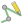
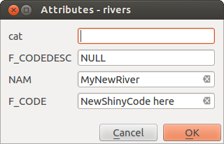
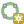

QGIS has various capabilities for editing OGR, SpatiaLite, PostGIS,
MS SQL Server and Oracle Spatial vector layers and tables.
They can be of 2D or 3D geometry type.
Under the Settings ► Options… ► Digitizing menu,
QGIS provides a number of parameters to configure default behaviour of
editing tools. More information at Digitizing settings.
For optimal and accurate editing of vector layer geometries, we need
to set an appropriate value of snapping tolerance and search radius for
features vertices. The Snapping group provides related options,
namely handling of the snapping tolerance and the search radius.
Snapping tolerance: When you add a new vertex or move an existing one,
the snapping tolerance is the distance QGIS uses to search for the closest
vertex or segment you are trying to connect to.
If you are not within the snapping tolerance, QGIS will leave the
vertex where you release the mouse button, instead of snapping
it to an existing vertex or segment.
The tolerance setting affects all tools that work with snapping and
applies by default to new layers and projets. It can however be overridden
at layer level (see Snapping and Digitizing Options).
Search radius:
Search radius for vertex edits is the distance QGIS uses
to search for the vertex to select when you click on the map.
If you are not within the search radius, QGIS will not find and select
any vertex for editing.
Snap tolerance and search radius are set in mapunits or pixels.
You may need to experiment to get them right.
If you specify a too big tolerance, QGIS may snap to the wrong vertex,
especially if you are dealing with a large number of vertices in close
proximity.
The smaller the search radius, the more difficult it will be to hit
what you want to move.
Global snapping and digitizing settings
(snapping mode, tolerance value, and units…) can be overridden in the
project from the Project ► Snapping Options… menu.
In the Snapping and Digitizing Options, you can also configure
some other properties (snapping layers, scale limit, topology…)
The Snapping Toolbar gives access to most of these features.
By default, snapping is disabled in a project until you press the
Enable snapping button or press S.
The snapping mode, tolerance value, and units can also be configured in
this toolbar.
There are three options to select the layer(s) to snap to:
All layers: quick setting for all visible layers in the
project so that the pointer snaps to all vertices and/or segments.
In most cases, it is sufficient to use this snapping mode, but beware
when using it for projects with many vector layers, as it may affect
performance.
Current layer: only the active layer is used, a convenient
way to ensure topological consistency within the layer being edited.
Advanced Configuration: allows you to enable and adjust
snapping mode, tolerance and units, overlaps and scales of snapping
on a layer basis (see Fig. 16.78).
If you need to edit a layer and snap its vertices to another, make
sure that the target layer is checked and increase the snapping
tolerance to a higher value.
Snapping will not occur to a layer that is not checked in the
snapping options dialog.
When moving or creating vertex, you can opt for the following snapping modes:
Segment: snaps along a line or a polygon perimeter.
If topological editing is enabled, then a new vertex is added at the snapping location.
Area: guarantees that the snap point lies anywhere on a polygon’s area,
not necessarily on its boundary
Centroid: snaps to the centroid of the geometry of a feature.
In case of a multipart geometry, the target point may be distinct from the existing parts.
Middle of Segments on line or polygon feature
Line Endpoints: snaps to the first or last vertex of every part
of a line or polygon feature.
QGIS will show different snap icons depending on the kind of snap:
Note that it is possible to change the color of these icons in the
Digitizing part of the global settings.
The tolerance values can be set either in the project’s mapunits
or in pixels.
The advantage of choosing pixels is that it keeps the snapping
constant at different map scales.
10 to 12 pixels is normally a good value, but it depends on the DPI of
your screen.
Using map units allows the tolerance to be related to real ground
distances.
For example, if you have a minimum distance between elements, this
option can be useful to ensure that you don’t add vertices too close to
each other.
By default, only visible features (the features whose style is displayed,
except for layers where the symbology is “No symbols”) can be snapped.
You can enable the snapping on invisible features by checking Enable snapping on invisible features under the
Settings ► Options ► Digitizing tab.
Tip
Enable snapping by default
You can set snapping to be enabled by default on all new projects in the
Settings ► Options ► Digitizing tab.
You can also set the default snapping mode, tolerance value, and units,
which will populate the Snapping Options dialog.
Another available option is to use snapping on
intersection, which allows you to snap to geometry intersections of
snapping enabled layers, even if there are no vertices at the intersections.
In some cases snapping can become very slow. This is often caused by the
amount of features in some layers that require a heavy index to compute
and maintain. Some parameters exist to enable snapping only when the map
view is inside a relevant scale range. This allows to only do the costly index
computation related to snapping at a scale where drawing is relevant.
Scale limit to snapping is configured in
Project ► Snapping Options….
Limiting snapping to scale is only available in
Advanced Configuration mode.
To limit snapping to a scale range you have three modes available:
Disabled: Snapping is enabled whatever the current map scale
is. This is the default mode.
Global: Snapping is limited and only enabled when the current
scale of the map is between a global minimum and a global maximum value.
When selecting this mode two widgets become available
to configure the range of scales in which snapping is enabled.
Per layer: The snapping scale range limit is defined for each layer.
When selecting this mode two columns become available
to configure the minimum and maximum scales for each layer.
Please note that the minimum and maximum scales follow the QGIS convention:
minimum scale is the most “zoomed out” scale while maximum scale is the most “zoomed in”.
A minimum or maximum scale that is set to “0” or “not set” is considered not limiting.
The Self-snapping option allows you to snap to
the geometry that is being edited. Combined with the advanced
digitizing panel, this provides a handy way
to digitize new edges relative to the previous edges or vertices.
Self-snapping can cause invalid geometries, use with caution.
A snapping distance can also be customized on a layer basis in the
Digitizing tab of the layer properties dialog.
With setting the Geometry precision distance, you enable
a dotted grid visible when the map canvas is at a coherent scale for display.
Snapping can then be performed on the dots of the grid: an added or modified
geometry will have all of its vertices snapped automatically to the closest
node of the grid. More information at Digitizing Properties.
In addition to these snapping options, the Snapping options…
dialog (Project ► Snapping options) and the
Snapping toolbar allow you to enable / disable some other
topological functionalities.
The Topological editing button helps
when editing and maintaining features with common boundaries.
With this option enabled, QGIS ‘detects’ shared boundaries.
When you move common vertices/segments, QGIS will also move them in
the geometries of the neighboring features.
Topological editing works with features from different layers, as long
as the layers are visible and in editing mode.
In layer with Z or M values, topological editing will interpolate the Z or M
value of the vertex based on the value of the edge used for the connection.
Overlapping prevents you from drawing new features that overlap existing ones in the
selected layer, speeding up digitizing of adjacent polygons.
It can be controlled by the overlap tool. Three modes are available:
Allow Overlap (default)
Avoid Overlap on Active Layer:
prevents any overlap with other features from the layer being edited.
Digitize the new geometries so that they overlap their neighbours and
QGIS will cut the overlapping part(s) of the new geometries and snap them
to the boundary of the existing features. The advantage is that you don’t
have to digitize the common vertices on boundary.
Follow Advanced Configuration:
allows the overlapping setting to be set on a layer basis in the
Advanced configuration view mode.
Note
If the new geometry is totally covered by existing ones, it gets
cleared, and QGIS will show an error message.
Warning
Use cautiously theAvoid overlapoption
Since this option will cut new overlapping geometries of any polygon layer,
you can get unexpected geometries if you forget to uncheck it when no longer
needed.
Usually, when using capturing map tools (add feature, add part, add
ring, reshape and split), you need to click each vertex of the feature.
With the automatic tracing mode, you can speed up the digitization
process as you no longer need to manually place all the vertices during
digitization:
Enable the Tracing tool (in the Snapping toolbar)
by pushing the icon or
pressing T key.
Snap to a vertex or segment of a feature
you want to trace along.
Move the mouse over another vertex or segment you’d like to snap and,
instead of the usual straight line, the digitizing rubber band
represents a path from the last point you snapped to the current
position. The tool also works with curved geometries.
QGIS actually uses the underlying features topology to build the
shortest path between the two points.
Tracing requires snapping to be activated in traceable layers to build
the path.
You should also snap to an existing vertex or segment while digitizing
and ensure that the two nodes are topologically connectable through
existing features edges, otherwise QGIS is unable to connect them and
thus traces a single straight line.
Click and QGIS places the intermediate vertices following the displayed
path.
Unfold the Enable Tracing icon and set the
Offset option to digitize a path parallel to the features
instead of tracing along them.
A positive value shifts the new drawing to the left side of the tracing
direction and a negative value does the opposite.
Note
Adjust map scale or snapping settings for an optimal tracing
If there are too many features in map display, tracing is disabled to avoid
potentially long tracing structure preparation and large memory overhead.
After zooming in or disabling some layers the tracing is enabled again.
Note
Does not add topological points
This tool does not add points to existing polygon geometries even
if Topological editing is enabled.
If geometry precision is activated on the edited layer, the resulting
geometry might not exactly follow an existing geometry.
Tip
Quickly enable or disable automatic tracing by pressing theTkey
By pressing the T key, tracing can be enabled/disabled
anytime (even while digitizing a feature), so it is possible to
digitize parts of the feature with tracing enabled and other
parts with tracing disabled.
Tools behave as usual when tracing is disabled.
Tip
Convert tracing to curved geometries
By using Settings ► Options ► Digitizing ► Tracing
you can create curved geometries while digitizing.
See digitizing options.
By default, QGIS loads layers read-only. This is a safeguard to avoid
accidentally editing a layer if there is a slip of the mouse.
However, you can choose to edit any layer as long as the data provider
supports it (see Exploring Data Formats and Fields), and the underlying data source
is writable (i.e., its files are not read-only).
Tip
Restrict edit permission on layers within a project
From the
Project ► Properties… ► Data Sources ►
Layers Capabilities table, you can choose to set any layer
read-only regardless the provider permission.
This can be a handy way, in a multi-users environment to avoid
unauthorized users to mistakenly edit layers (e.g., Shapefile),
hence potentially corrupt data.
Note that this setting only applies inside the current project.
In general, tools for editing vector layers are divided into a
digitizing and an advanced digitizing toolbar, described in section
Advanced digitizing.
You can select and unselect both under View ► Toolbars ►.
Using the basic digitizing tools, you can perform the following functions:
Set whether the vertex editor panel should
auto-open
Modify the attributes of all
selected features simultaneously
Delete Selected features from the active layer
Cut Features from the active layer
Copy selected Features from the active layer
Paste Features into the active layer
Undo changes in the active layer
Redo changes in active layer
Note that while using any of the digitizing tools, you can still
zoom or pan in the map canvas without losing the
focus on the tool.
All editing sessions start by choosing the Toggle editing option found in the context menu of a given layer,
from the attribute table dialog, the digitizing toolbar or the
Layer menu.
Once the layer is in edit mode, additional tool buttons on the editing
toolbar will become available and markers will appear at the vertices
of all features unless
Show markers only for selected features option under
Settings ► Options… ► Digitizing menu is checked.
Tip
Save Regularly
Remember to Save Layer Edits regularly.
This will also check that your data source can accept all the changes.
When a geometry drawing tool (mainly the ones that add, split, reshape features)
is enabled for a line or polygon based layer, you can select the technique for
adding new vertices:
The Digitize with Segment: draws straight segment
whose start and end points are defined by left clicks.
The Digitize with Curve: draws curve line based on
three consecutive nodes defined by left clicks (start, point along the arc, end).
If the geometry type does not support curves, then consecutive smaller segments
are used to approximate the curvature.
The Stream Digitizing: draws lines in freehand mode,
i.e. nodes are added following cursor movement in the map canvas and
a Streaming Tolerance.
The streaming tolerance defines the spacing between consecutive vertices.
Currently, the only supported unit is pixels (px). Only the starting left
click and the ending right click are necessary in this mode.
The Digitize Shape: triggers tools on the
Shape Digitizing Toolbar to draw a polygon of a regular shape.
The selected technique remains while switching among the digitizing tools.
You can combine any of the first three methods while drawing the same geometry.
Depending on the layer type, you can use the Add Record,
Add Point Feature, Add Line Feature
or Add Polygon Feature icons on the toolbar to add new
features into the current layer.
To add a geometryless feature, click on the Add Record
button and you can enter attributes in the feature form that opens.
To create features with the spatially enabled tools, you first digitize the
geometry then enter its attributes. To digitize the geometry:
(Optional as it is the default) Select the Digitize With Segment geometry drawing method
Left-click on the map area to create the first point of your new feature.
For point features, this should be enough and trigger, if required,
the feature form to fill in their attributes.
For line or polygon geometries, keep on left-clicking for each additional
point you wish to capture.
You can rely on the snapping to features options,
the snap-to-grid or the advanced digitizing panel to accurately position each vertex.
Along with drawing straight segments between nodes you click one by one,
lines and polygons can be:
traced automatically, accelerating the digitization.
This will create consecutive straight lines between the vertices you
place, following existing features.
free-hand digitized, pressing R or activating Stream Digitizing.
drawn as curve, pressing Ctrl+Shift+G or activating Digitize with Curve.
Note
While digitizing line or polygon geometries, you can switch back and forth
between the geometry drawing methods, allowing you to create features
mixing straight segments, free-hand ones and curved parts.
Press Delete or Backspace key to revert the last node(s) you
may wrongly add.
When you have finished adding points, right-click anywhere on the map area
to confirm you have finished entering the geometry of that feature.
Tip
Customize the digitizing rubber band
While capturing polygon, the by-default red rubber band can hide underlying
features or places you’d like to capture a point. This can be fixed by setting
a lower opacity (or alpha channel) to the rubber band’s Fill Color
in Settings ► Options ► Digitizing menu.
You can also avoid the use of the rubber band by checking Don’t
update rubber band during node editing.
For line feature pressing Shift + right-click will close the line automatically.
The attribute window will appear, allowing you to enter the information for
the new feature. Fig. 16.80 shows setting attributes for
a fictitious new river. However, in the Digitizing menu under the
Settings ► Options menu, you can also:
Suppress attributes pop-up windows after
each created feature to avoid the form opening;
or Reuse last entered attribute values to
have fields automatically filled at the opening of the form and
just have to type changing values.

Fig. 16.80 Enter Attribute Values Dialog after digitizing a new vector feature
QGIS provides two tools to interact with vector features vertices:
Vertex Tool (Current Layer): only
overlaid features in the active layer (in the Layers
panel) are affected
Vertex Tool (All Layers): any overlaid features
in all editable layers are affected. This allows you to edit features
without switching the active layer or edit multiple layers at once
(e.g., country and their regions boundaries)
For any editable vector layer, the vertex tools provide manipulation
capabilities of
feature vertices similar to CAD programs. It is possible to select
multiple vertices at once and to move, add or delete them altogether.
The vertex tools also support the topological editing feature.
They are selection persistent, so when some
operation is done, selection stays active for this feature and tool.
It is important to set the property Settings ►Options ► Digitizing ►Search Radius: to a number greater than zero. Otherwise, QGIS will
not be able to tell which vertex is being edited and will display a warning.
Tip
Vertex Markers
QGIS supports different kinds of vertex markers:
‘Semi-transparent circle’, ‘Cross’ and ‘None’. To change the marker style,
choose Options from the
Settings menu, click on the Digitizing
tab and select the appropriate entry.
Given a layer in edit mode, start by activating the vertex tool.
Red circles will appear when hovering vertices.
Selecting vertices: You can select vertices by:
Clicking on them one at a time holding Shift key pressed
Click-and-dragging a rectangle surrounding the target vertices
Drawing a polygon surrounding the target vertices: Hold Alt
and click using the vertex tool to start digitizing a polygon.
Each subsequent click adds a new vertex to the rubberband polygon.
Backspace or Delete removes last added rubberband vertex.
Esc cancels the polygon selection mode, as also does
backspacing/deleting all of the rubberband’s vertices.
Right click finalizes the polygon digitizing and selects all vertices
within the rubberband polygon.
When a vertex is selected, its color changes to blue.
To add more vertices to the current selection, hold down
the Shift key while proceeding as above.
To remove vertices from the selection, hold down Ctrl.
Tip
Feature selection bounds vertex tool
Vertices can be selected accross different features (or layers).
If you are looking for vertices of a specific feature in a crowded place,
first select that feature. Then draw the rectangle or polygon selector
with the vertex tool around the vertices: only the selected feature’s
vertices are selected.
This is also the case if you display the feature in the
vertex editor panel.
Batch vertex selection mode:
The batch selection mode can be activated by pressing Shift+R.
Select a first node with one single click, and then hover without clicking
another vertex. This will dynamically select all the nodes in
between using the shortest path (for polygons).
Press Ctrl will invert the selection, selecting the longest
path along the feature boundary.
Ending your node selection with a second click, or pressing Esc
will escape the batch mode.
Adding vertices: To add a vertex to a line or polygon geometry,
hold Shift and double-click the place on the segment.
When hovering a segment, a virtual new node appears on the center.
Click on it, move the cursor to a new location and click again to add a new vertex.
For lines, a virtual node is also proposed at both extremities: click on it,
do subsequent clicks and finish with a right-click; this allows
to easily extend an existing line.
Deleting vertices: Select the vertices and click the
Delete key.
Deleting all the vertices of a feature generates, if compatible with
the datasource, a geometryless feature. Note that this doesn’t delete
the complete feature, just the geometry part.
To delete a complete feature use the Delete Selected tool.
Moving vertices: Select all the vertices you want to move, click
on a selected vertex or edge, and click on the desired new location.
You can use the snapping to feature capabilities
and the Advanced Digitizing Panel
constraints for distance, angles, exact X and Y location before
the second click. All the selected vertices will be translated.
However, if the snap-to-grid option is enabled,
selected vertices are snapped to the closest grid intersection to their
translated position.
Unselected vertices are also moved to their closest grid intersection.
There is no simple translation.
Fig. 16.83 Moving the top vertex snaps all the vertices to the grid
Converting adjacent segments to/from curve: Select the center vertex of the segment you want
to convert, hit the O letter key.
If the vertex was in a curve, the curve is converted into straight lines.
If the vertex was between two straight lines, they are converted into a curve.
A first or a last vertex of a line can’t be converted to a center vertex curve.
The layer must be compatible with curve geometry type.
Fig. 16.84 Switch from curve to straight lines with O letter
Each change made with the vertex tool is stored as a separate entry in the
Undo dialog. Remember that all operations support
topological editing when this is turned on.
On-the-fly projection is also supported.
With enabling a vertex tool, you also open the Vertex Editor panel.
Right-clicking over a feature fills the panel with the list of all the vertices of the feature
with their x, y (z, m if applicable) coordinates
and r (for the radius, in case of circular geometry).
The feature is also made exclusive for editing, meaning that the edit of any other features is disabled:
Selecting a row in the table does select the corresponding vertex in the map canvas, and vice versa.
Clicking or dragging over the map canvas will only select or move vertices and segments of that feature
Change a coordinate in the table and the vertex position is updated.
This is a convenient way to edit Z coordinate or M value on vertices.
You can also select multiple rows and delete them altogether.
New vertices can only be added to the bound feature
If you do not want the Vertex Editor panel to immediately show
each time you interact with vertex tools (and potentially hide other panels
or disturb panels placement), uncheck the Auto-open table entry
in the Options menu at the top of the panel.
You can then also close the panel.
To reopen the panel, you would need to right-click over a panel or toolbar and
select it in the list or tick the Show vertex editor entry in
the Digitizing toolbar.
Digitizing 3D vector features or features with M value is not that different from (X,Y) 2D layers’.
Tools and options described in this chapter are still available
and help you place the vertex or point in a planar environment.
Then you may need to handle the Z coordinate (or M value) assignment:
By default, QGIS will assign to new vertices the Default Z value
(respectively Default M value) set in the
Settings ► Options ► Digitizing tab.
If the Advanced Digitizing Panel is in
use, then the value is taken from its z
(respectively m) widget.
When snapping to a vertex, the new or moved vertex takes the snapped one’s Z or M value.
When snapping to a segment while the topological editing is on,
then the new vertex Z or M value is interpolated along the segment.
If the z (respectively m) widget of the
Advanced Digitizing Panel is locked, then its value is
applied to the vertex, taking precedence over any snapped vertex or segment
Z or M value.
To edit Z or M values of an existing feature, you can use the
Vertex editor panel.
To create features with custom Z or M values you may want to rely on the
Advanced Digitizing Panel.
Selected features can be cut, copied and pasted between layers in the same
QGIS project, as long as destination layers are set to Toggle editing beforehand.
Tip
Transform polygon into line and vice-versa using copy/paste
Copy a line feature and paste it in a polygon layer:
QGIS pastes in the target layer a polygon whose boundary corresponds
to the closed geometry of the line feature.
This is a quick way to generate different geometries of the same
data.
Features can also be pasted to external applications as text.
That is, the features are represented in CSV format, with the geometry
data appearing in the OGC Well-Known Text (WKT) format.
WKT and GeoJSON features from outside QGIS can also be pasted to a
layer within QGIS.
When would the copy and paste function come in handy? Well, it turns
out that you can edit more than one layer at a time
and copy/paste features between layers. Why would we want to do this?
Say we need to do some work on a new layer but only need one or two
lakes, not the 5,000 on our big_lakes layer.
We can create a new layer and use copy/paste to plop the needed lakes
into it.
As an example, we will copy some lakes to a new layer:
Load the layer you want to copy from (source layer)
Load or create the layer you want to copy to (target layer)
Start editing for target layer
Make the source layer active by clicking on it in the legend
Use the Select Features by area or single click
tool to select the feature(s) on the source layer
Click on the Copy Features tool
Make the destination layer active by clicking on it in the legend
Click on the Paste Features tool
Stop editing and save the changes
What happens if the source and target layers have different schemas (field
names and types are not the same)? QGIS populates what matches and ignores
the rest. If you don’t care about the attributes being copied to the target
layer, it doesn’t matter how you design the fields and data types. If you
want to make sure everything - the feature and its attributes - gets copied,
make sure the schemas match.
Note
Congruency of Pasted Features
If your source and destination layers use the same projection, then the
pasted features will have geometry identical to the source layer. However,
if the destination layer is a different projection, then QGIS cannot
guarantee the geometry is identical. This is simply because there are
small rounding-off errors involved when converting between projections.
Tip
Copy string attribute into another
If you have created a new column in your attribute table with type
‘string’ and want to paste values from another attribute column that
has a greater length the length of the column size will be extended
to the same amount.
This is because the GDAL Shapefile driver knows to auto-extend string
and integer fields to dynamically accommodate for the length of
the data to be inserted.
If we want to delete an entire feature (attribute and geometry), we can do that
by first selecting the geometry using the regular Select
Features by area or single click tool. Selection can also be done from the attribute
table. Once you have the selection set, press Delete or Backspace
key or use the Delete Selected tool to delete
the features. Multiple selected features can be deleted at once.
The Cut Features tool on the digitizing toolbar can
also be used to delete features. This effectively deletes the feature but
also places it on a “spatial clipboard”. So, we cut the feature to delete.
We could then use the Paste Features tool to put it back,
giving us a one-level undo capability. Cut, copy, and paste work on the
currently selected features, meaning we can operate on more than one at a time.
The Undo and Redo tools allows you to undo or redo
vector editing operations. There is also a dockable widget, which shows all
operations in the undo/redo history (see Fig. 16.86). This widget is not
displayed by default; it can be displayed by right-clicking on the toolbar and
activating the Undo/Redo Panel checkbox. The Undo/Redo capability
is however active, even if the widget is not displayed.
When Undo is hit or Ctrl+Z (or Cmd+Z) pressed, the state of all
features and attributes are reverted to
the state before the reverted operation happened. Changes other than normal
vector editing operations (for example, changes done by a plugin) may or may
not be reverted, depending on how the changes were performed.
To use the undo/redo history widget, simply click to select an operation in
the history list. All features will be reverted to the state they were in
after the selected operation.
When a layer is in editing mode, any changes remain in the memory of QGIS.
Therefore, they are not committed/saved immediately to the data source or disk.
If you want to save edits to the current layer but want to continue editing
without leaving the editing mode, you can click the Save Layer Edits button. When you turn editing mode off with
Toggle editing (or quit QGIS for that matter),
you are also asked if you want to save your changes or discard them.
If the changes cannot be saved (e.g., disk full, or the attributes have values
that are out of range), the QGIS in-memory state is preserved. This allows
you to adjust your edits and try again.
Tip
Data Integrity
It is always a good idea to back up your data source before you start
editing. While the authors of QGIS have made every effort to preserve the
integrity of your data, we offer no warranty in this regard.
This feature allows the digitization of multiple layers. Choose
Save for Selected Layers to save all changes you
made in multiple layers. You also have the opportunity to
Rollback for Selected Layers, so that the
digitization may be withdrawn for all selected layers.
If you want to stop editing the selected layers, Cancel
for Selected Layer(s) is an easy way.
The same functions are available for editing all layers of the project.
Tip
Use transaction group to edit, save or rollback multiple layers changes at once
When working with layers from the same PostGreSQL database, activate the
Automatically create transaction groups where possible option in
Project ► Properties… ► Data Sources to sync their
behavior (enter or exit the edit mode, save or rollback changes at the same time).
The Move Feature(s) tool allows you to move existing features:
Select the feature(s) to move.
Click on the map canvas to indicate the origin point of the displacement; you
can rely on snapping capabilities to select an accurate point.
You can also take advantages of the advanced digitizing constraints to accurately set the origin point coordinates. In
that case:
First click on the button to enable the panel.
Type x and enter the corresponding value for the origin point you’d like
to use. Then press the button next to the option to lock the value.
Do the same for the y coordinate.
Click on the map canvas and your origin point is placed at the indicated
coordinates.
Move over the map canvas to indicate the destination point of the displacement,
still using snapping mode or, as above, use the advanced digitizing panel which
would provide complementary distance and angle placement constraints
to place the end point of the translation.
Click on the map canvas: the whole features are moved to new location.
Likewise, you can create a translated copy of the feature(s) using the
Copy and Move Feature(s) tool.
Note
If no feature is selected when you first click on the map canvas with any of
the Move Feature(s) or Copy and Move Feature(s) tools,
then only the feature under the mouse is affected by the action. So, if you
want to move several features, they should be selected first.
Use the Rotate Feature(s) tool to rotate one or multiple
features in the map canvas:
Press the Rotate Feature(s) icon
Then click on the feature to rotate. The feature’s centroid is referenced as
rotation center, a preview of the rotated feature is displayed and a widget
opens showing the current Rotation angle.
Click on the map canvas when you are satisfied with the new placement or
manually enter the rotation angle in the text box. You can also use the
Snap to ° box to constrain the rotation values.
If you want to rotate several features at once, they shall be selected first,
and the rotation is by default around the centroid of their combined
geometries.
You can also use an anchor point different from the default feature centroid:
press the Ctrl button, click on the map canvas and that point will be
used as the new rotation center.
If you hold Shift before clicking on the map, the rotation will be done
in 45 degree steps, which can be modified afterwards in the user input widget.
To abort feature rotation, press the ESC button or click on the
Rotate Feature(s) icon.
The Scale Feature tool is similar to the Rotate feature. Though instead of performing
a rotation of selected features, it rescales their geometry. The change is
performed in relation to the anchor point and the scale ratio can be manually specified
in the widget that appears in the upper corner of the canvas.
The Simplify Feature tool allows you to interactively
reshape a line or polygon geometry by reducing or densifying the number of
vertices, as long as the geometry remains valid:
Select the Simplify Feature tool.
Click on the feature or drag a rectangle over the features.
A dialog pops up allowing you to define the Method to apply, ie
whether you would like to:
simplify the geometry, meaning less vertices
than the original. Available methods are Simplifybydistance, Simplifybysnappingtogrid or simplifybyarea(Visvalingam). You’d then need
to indicate the value of Tolerance in Layerunits, Pixels
or mapunits to use for simplification. The higher the tolerance is the
more vertices can be deleted.
or densify the geometries with new vertices
thanks to the Smooth option: for each existing vertex, two vertices are
placed on each of the segments originated from it, at an Offset
distance representing the percentage of the segment length.
You can also set the number of Iterations the placement would
be processed: the more iterations, the more vertices and smoother is the
feature.
Settings that you used will be saved when leaving a project or an edit
session. So you can go back to the same parameters the next time you
simplify a feature.
A summary of the modifications that would apply is shown at the bottom of the
dialog, listing number of features and number of vertices (before and after
the operation and the ratio the change represents).
Also, in the map canvas, the expected geometry is displayed over the existing
one, using the rubberband color.
When the expected geometry fits your needs, click OK to apply the
modification.
Otherwise, to abort the operation, you can either press Cancel or
right-click in the map canvas.
Note
Unlike the feature simplification option in Settings ►
Options ► Rendering menu which simplifies the geometry just for rendering,
the Simplify Feature tool permanently modifies
feature’s geometry in data source.
You can Add Part to a selected feature generating a
multipoint, multiline or multipolygon feature. The new part must be digitized
outside the existing one which should be selected beforehand.
The Add Part can also be used to add a geometry to a geometryless
feature. First, select the feature in the attribute table and digitize the new
geometry with the Add Part tool.
The Delete Part tool allows you to delete parts from
multifeatures (e.g., to delete polygons from a multi-polygon feature). This
tool works with all multi-part geometries: point, line and polygon. Furthermore,
it can be used to totally remove the geometric component of a feature.
To delete a part, simply click within the target part.
You can create ring polygons using the Add Ring icon in the toolbar. This means that inside an existing area, it
is possible to digitize further polygons that will occur as a ‘hole’, so
only the area between the boundaries of the outer and inner polygons remains
as a ring polygon.
The Fill Ring tool helps you create polygon feature that
totally falls within another one without any overlapping area; that is the new
feature covers a hole within the existing one. To create such a feature:
Select the Fill Ring tool.
Draw a new polygon over the existing feature: QGIS adds a ring to its geometry
(like if you used the Add Ring tool) and creates a new
feature whose geometry matches the ring (like if you traced
over the interior boundaries with the Add polygon
feature tool).
Or alternatively, if the ring already exists on the feature, place the mouse
over the ring and left-click while pressing Shift: a new feature
filling the hole is drawn at that place.
The Feature Attributes form of the new feature opens, pre-filled
with values of the “parent” feature and/or fields constraints.
The Delete Ring tool allows you to delete rings within
an existing polygon, by clicking inside the hole. This tool only works with
polygon and multi-polygon features. It doesn’t
change anything when it is used on the outer ring of the polygon.
You can reshape line and polygon features using the Reshape Features tool on the toolbar. For lines, it replaces the line
part from the first to the last intersection with the original line.
Use the Reshape Features tool to extend existing linestring
geometries: snap to the first or last vertex of the line and draw a new one.
Validate and the feature’s geometry becomes the combination of the two lines.
For polygons, it will reshape the polygon’s boundary. For it to work, the
reshape tool’s line must cross the polygon’s boundary at least twice. To draw
the line, click on the map canvas to add vertexes. To finish it, just
right-click. Like with the lines, only the segment between the first and the
last intersections is considered. The reshape line’s segments that are inside
the polygon will result in cropping it, where the ones outside the polygon will
extend it.
With polygons, reshaping can sometimes lead to unintended results.
It is mainly useful to replace smaller parts of a polygon, not for
major overhauls, and the reshape line is not allowed to cross several
polygon rings, as this would generate an invalid polygon.
Note
The reshape tool may alter the starting position of a polygon ring or a
closed line. So, the point that is represented ‘twice’ will not be the same
any more. This may not be a problem for most applications, but it is
something to consider.
The Offset Curve tool creates parallel shifts of
line layers.
The tool can be applied to the edited layer (the geometries are modified)
or also to background layers (in which case it creates copies of the lines /
rings and adds them to the edited layer).
It is thus ideally suited for the creation of distance line layers.
The User Input dialog pops-up, showing the displacement distance.
To create a shift of a line layer, you must first go into editing mode
and activate the Offset Curve tool.
Then click on a feature to shift it.
Move the mouse and click where wanted or enter the desired distance in
the user input widget. Holding Ctrl during the 2nd click will make an offset copy.
Your changes may then be saved with the Save Layer Edits tool.
QGIS options dialog (Digitizing tab then Curve offset tools section) allows
you to configure some parameters like Join style, Quadrant segments,
Miter limit.
Use the Split Features tool to split a feature into two
or more new and independent features, ie. each geometry corresponding to a new
row in the attribute table.
To split line or polygon features:
Select the Split Features tool.
Draw a line across the feature(s) you want to split.
If a selection is active, only selected features are split.
Fields of resulting features are filled according to their splitting policy.
You can then as usual modify any of the attributes of any resulting feature.
Tip
Split a polyline into new features in one-click
Using the Split Features tool, snap and click on an
existing vertex of a polyline feature to split that feature into two new features.
In QGIS it is possible to split the parts of a multi part feature so that the
number of parts is increased. Just draw a line across the part you want to split using
the Split Parts icon.
Tip
Split a polyline into new parts in one-click
Using the Split Parts tool, snap and click on an
existing vertex of a polyline feature to split the feature into two new
polylines belonging to the same feature.
The Merge Selected Features tool allows you to create
a new feature by merging existing ones: their geometries are merged to generate
a new one. If features don’t have common boundaries,
a multipolygon/multipolyline/multipoint feature is created.
First, select the features you’d like to combine.
Then press the Merge Selected Features button.
In the new dialog, the Merge line at the bottom of the table
shows the attributes of the resulting feature. You can alter any of these
values either by:
manually replacing the value in the corresponding cell;
selecting a row in the table and pressing Take attributes from
selected feature to use the values of this initial feature;
pressing the Take attributes from the largest geometry
to use the attributes from the longest line feature,
the largest polygon, or the multipoints with the most parts;
pressing Skip all fields to use empty attributes;
expanding the drop down menu at the top of the table, select any of the
above options to apply to the corresponding field only. There, you can also
choose to aggregate the initial features attributes (Minimum, Maximum, Median,
Sum, Count, Concatenation… depending on the type of the field.
see Statistical Summary Panel for the full list of functions).
Note
If the layer has default values or clauses present on fields,
these are used as the initial value for the merged feature.
Press OK to apply the modifications. A single (multi)feature is
created in the layer, replacing the previously selected ones.
The Merge Attributes of Selected Features tool
allows you to apply same attributes to features without merging their boundaries.
The dialog is the same as the MergeSelectedFeatures tool’s except that
unlike that tool, selected objects are kept with their geometry while some of their
attributes are made identical.
The Rotate Point Symbols allows you to individually
change the rotation of point symbols in the map canvas.
First, you need to indicate the field to store the rotation value in.
This is made by assigning a field to the symbol data-defined
rotation property:
In the Layer Properties ► Symbology dialog, browse to
the symbol editor dialog.
Click the Data-defined override widget near the
Rotation option of the top Marker level (preferably)
of the symbol layers.
Choose a field in the Field Type combobox. Values of this
field are hence used to rotate each feature’s symbol accordingly.
You can also check the Store data in project entry to generate an
auxiliary data storage field to
control the rotation value.
Note
Make sure that the same field is assigned to all the symbol layers
Setting the data-defined rotation field at the topmost level of the symbol
tree automatically propagates it to all the symbol layers, a prerequisite to
perform graphical symbol rotation with the Rotate Point Symbols
tool. Indeed, if a symbol layer does not have the same field attached to its
rotation property, the tool will not work.
Then click on a point symbol in the map canvas with the
Rotate Point Symbols tool
Move the mouse around.
A red arrow with the rotation value will be visualized (see
Fig. 16.89).
If you hold the Ctrl key while moving, the rotation will be done
in 15 degree steps.
When you get the expected angle value, click again. The symbol is rendered
with this new rotation and the associated field is updated accordingly.
The Offset Point Symbols allows you to interactively
change the rendered position of point symbols in the map canvas. This tool behaves
like the Rotate Point Symbols tool except that it
requires you to connect a field to the data-defined Offset (X,Y)
property of each layer of the symbol. The field will then be populated with the
offset coordinates for the features whose symbol is moved in the map canvas.
Associate a field to the data-defined widget of the Offset (X,Y)
property of the symbol. If the symbol is made with many layers, you may
want to assign the field to each of them
Select the Offset Point Symbols tool
Click a point symbol
Move to a new location
Click again. The symbol is moved to the new place.
Offset values from the original position are stored in the linked field.
You can right-click to abort symbol offset.
Note
The Offset Point Symbols tool doesn’t
move the point feature itself; you should use the Vertex Tool (Current Layer) or Move Feature
tool for this purpose.
The Trim/Extend tool allows you to shorten or lengthen
segments of a (multi)line or (multi)polygon geometry to converge with a
selected segment (the cutting line). This results in a modified geometry
with a vertex snapped to the target segment or in its prolongation.
Depending on how the selected geometries are placed in relation to each
other, the tool will either:
Trim: removes parts of the line segment or polygon boundary,
beyond the cutting line
Extend: extends polygon boundaries or line segments so that they can
snap to the cutting line.
In order to trim or extend existing geometries:
Enable appropriate snapping settings on segment
for the involved layer(s)
Select the Trim/Extend tool
Click the target limit segment, i.e. the segment with respect to which
you want to extend or trim another segment. It appears highlighted.
Move to the segment you want to trim or extend. It does not need to be
the last segment of the geometry, but has to be on the active layer.
Hover over the segment, and QGIS displays a preview of what the feature’s
geometry would be. If OK, click the segment.
In the case of a trim, you must select the part that should be shortened.
When both segments are in 3D, the tool performs an interpolation on
the limit segment to get the Z value.
Attention
Pay attention to the modified geometry while using the Trim/Extend tool. Depending on the inputs, it can create invalid
geometries, potentially resulting in failure at layer saving.
The Shape Digitizing toolbar offers a set of tools to draw lines
or polygons features of regular shape.
It is synchronized with the Digitize Shapegeometry drawing method you can select on the Digitizing Toolbar.
To use it:
Display the toolbar: View ► Toolbars ► Shape Digitizing
Select a tool that creates or modifies the shape of a geometry,
e.g. Add line feature, Add polygon feature,
Add part, Add ring, Reshape Features, …
The Digitize with segment button
on the Digitizing Toolbar is enabled.
The first time, you may need to switch it to the Digitize Shape
in order to enable tools on the Shape Digitizing toolbar.
The Circular string by radius button allows
to add line or polygon features with a circular geometry, given two nodes
on the curve and a radius:
Left click twice to place the two points on the geometry.
A Radius widget in the top right corner of the map canvas
displays current radius (corresponding to distance between the points).
Edit that field to the value you want.
An overview of the arcs matching these constraints is displayed while
moving around the cursor. Right-click to validate when the expected
arc is shown.
Add a new point to start shaping another arc.
Note
Curved geometries are stored as such only in compatible data provider
Although QGIS allows to digitize curved geometries within any editable
data format, you need to be using a data provider (e.g. PostGIS, memory
layer, GML or WFS) that supports curves to have features stored as
curved, otherwise QGIS segmentizes the circular arcs.
There is a set of tools for drawing circles. The tools are described
below.
Circles are converted into circular strings. Therefore, as explained in
Circular string by radius, if allowed by the data provider, it will be saved as a
curved geometry, if not, QGIS will segmentize the circular arcs.
Circle from 2 points: The two points define the diameter
and the orientation of the circle. (Left-click, right-click)
Circle from 3 points: Draws a circle from three
known points on the circle. (Left-click, left-click, right-click)
Circle by a center point and another point: Draws a circle
with a given center and a point on the circle (Left-click, right-click).
When used with the The Advanced Digitizing panel this tool can become a
“Add circle from center and radius” tool by setting and locking the distance
value after first click.
Circle from 3 tangents: Draws a circle that is
tangential to three segments. Note that you must activate snapping to
segments (See Setting the snapping tolerance and search radius). Click on a segment to add a
tangent. If two tangents are parallel, the coordinates of the click on the
first parallel tangent are used to determine the positioning of the circle.
If three tangents are parallel, an error message appears and the input
is cleared. (Left-click, left-click, right-click)
Circle from 2 tangents and a point: Similar
to circle from 3 tangents, except that you have to select two tangents, enter
a radius and select the desired center.
There is a set of tools for drawing rectangles. The tools are described
below.
Rectangle from center and a point: Draws a
rectangle from the center and a corner. (Left-click, right-click)
Rectangle from extent: Draws a rectangle from two
opposite corners. (Left-click, right-click)
Rectangle from 3 points (distance): Draws an
oriented rectangle from three points. The first and second points determine the
length and angle of the first edge. The third point determines the length of the
other edge. One can use The Advanced Digitizing panel to set the length of the
edges. (Left-click, left-click, right-click)
Rectangle from 3 points (projected): Same as
the preceding tool, but the length of the second edge is computed from the
projection of the third point on the first edge. (Left-click, left-click,
right-click)
Fig. 16.90 Draw rectangle from 3 points using distance (right) and projected (left)
There is a set of tools for drawing regular polygons. The tools are described
below. Left-click to place the first point.
A dialog appears, where you can set the number of polygon edges.
Right-click to finish the regular polygon.
Regular polygon from two points: Draws a regular
polygon where the two points determine the length and angle of the first edge.
Regular polygon from center and a point:
Draws a regular polygon from the provided center point. The second point determines the
angle and distance to the middle of an edge.
Regular polygon from center and a corner:
Same as the preceding tool, but the second point determines the angle and
distante to a vertex.
When capturing, reshaping, splitting new or existing geometries you also have the
possibility to use the Advanced Digitizing panel. You can digitize lines exactly
parallel or perpendicular to a particular angle or lock lines to specific angles.
Furthermore, you can make a precise definition of your new geometry by entering
X and Y coordinates as well as Z for 3D features, or M values.
The Advanced Digitizing panel can be opened either with a right-click
on the toolbar, from View ► Panels ► menu or pressing
Ctrl+4. Once the panel is visible, click the Enable advanced
digitizing tools button to activate the set of tools.
Note
The tools are not enabled if the map view is in geographic coordinates.
The aim of the Advanced Digitizing tool is to lock coordinates, lengths, and angles
when moving the mouse during the digitalizing in the map canvas.
You can also create constraints with relative or absolute reference. Relative
reference means that the next vertex constraints’ values will be relative to the
previous vertex or segment.
At the top of the Digitizing panel, you find the following buttons:
Enable advanced digitizing tools
Construction mode: allows to capture the clicks’
positions to reuse as reference points to lock distance, angle, X, Y, Z or M
relative values. More details at Construction mode.
Snap to common angles: when moving the cursor,
displays a virtual line that you can snap to to add the next vertex.
The snapping line is defined by the last added vertex
and an (absolute or relative to previous segment) angle from a preset list
(following steps of 0.1°, 0.5°, 1°, 5°, 10°, 15°, 18°, 22.5°, 30°, 45° or 90°).
Choose Do not snap to common angles to disable this feature.
Snapping to features can be used along with
snapping to common angles for accurate digitizing.
For a fine-grained control on how the target element to snap to is retained,
you can indicate whether to prioritize snapping to features over common angles,
and vice-versa under the Snapping priority entry.
You can switch from one method to the other during the digitizing operation,
and this avoids disabling any of the snapping options in the meantime.
Press N (or Shift+N) during a digitizing operation to cycle through the angles list.
Floater settings: if the Show floater item is checked,
a contextual menu with digitizing information follows the cursor during digitizing.
The values can be accessed using the panel’s shortcuts,
edited and Locked after validation (pressing Enter).
The type of information to display can be selected in the bottom part of the menu:
Show distance
Show angle
Show XY coordinates
Show Z value
Show M value
Show bearing/azimuth
Show common snapping angle
Construction Tools provides a couple of options that
constrain the vertices placement based on extrapolated coordinates of
existing elements:
Line Extension: hover over a segment and you get
a purple dotted line extending the segment across the map canvas.
You can snap the vertex anywhere on this virtual line.
X/Y Point: hover over a vertex and you get
a purple dotted line along its X or Y coordinate, across the map canvas.
You can snap the vertex anywhere on this virtual line.
It is even possible to hover over two different vertices, generating virtual
coordinate lines for both, and snap to their intersection.
Below the toolbar, you will find a number of text boxes whose value reflects
by default the position or movement of the cursor in the map canvas.
Editing these values helps you constrain the position of the items you edit:
d for the distance from a reference position, usually the last
edited vertex
a for the angle (absolute or relative) from a reference position,
usually the last edited segment
x for the X coordinate of the pointer
y for the Y coordinate of the pointer
z for the default Z value or the Z coordinate of the vertex
or segment under the pointer
m for the default M value or the M value of the vertex or segment
under the pointer
When drawing a new geometry from scratch, it is very useful to have the
possibility to start digitizing vertexes at given coordinates.
For example, to add a new feature to a polygonal layer, click the
button. You can enter the exact coordinates where you want
to start editing the feature, i.e.:
Click the x text box (or use the X keyboard shortcut).
Type the X coordinate value you want and press Enter or click the
button to their right to lock the mouse to the X axis on the map
canvas.
Click the y text box (or use the Y keyboard shortcut).
Type the Y coordinate value you want and press Enter or click the
button to their right to lock the mouse to the Y axis on the map
canvas.
If the layer has Z coordinate or M values, the corresponding z
or m widget is enabled and displays its default value,
as set in Settings ► Options ► Digitizing tab.
Click the z or m text box (or use respectively
the Z or M keyboard shortcut).
Type the coordinate value you want and press Enter or click the
button to their right to lock the value in the widget.
Two blue dotted lines and a green cross identify the exact coordinates you
entered.
Click on the map canvas to add a vertex at the green cross position.
You can proceed as above, adding a new set of coordinates for the next vertex,
or switch to another mode of digitizing
(e.g. segment, curve or stream).
If you want to draw a segment of a given length:
Click the d (distance) text box (keyboard shortcut D)
Type the distance value (in map units)
Press Enter or click the button on the right to
lock the mouse in the map canvas to the length of the segment.
In the map canvas, the latest vertex is surrounded by a circle whose
radius is the value entered in the distance text box.
A cross on the circle shows the position of the next vertex if you click.
You can also constrain the vertex position, setting the angle of the segment.
As described before:
Click the a (angle) text box (keyboard shortcut A)
Type the angle value (in degrees)
Press Enter or click the button on the right to lock it.
A line going through the latest vertex and rotated based on the set angle
appears in the map canvas and a cross on it shows the next vertex
position if you click.
Pressing Ctrl+<key> or Alt+<key> automatically locks
the target property and puts its value into edit. Modify, press Enter
and you are done. Combined with the Toggle floater,
this can be a real time saver, with keyboard digitizing.
Instead of using absolute values of angles or coordinates, you can also use
values relative to the last digitized vertex or segment.
For angles, you can click the button on the left of the a
text box (or press Shift+A) to toggle relative angles to the previous
segment. With that option on, angles are measured between the last segment
and the mouse pointer.
For coordinates, click the buttons to the left of the x,
y, z or m text boxes (or press Shift+<key>)
to toggle relative coordinates to the previous vertex. With these options on,
coordinates measurement will consider the last vertex to be the origin of
the set coordinates.
Both in absolute or relative reference digitizing, angle, distance, X, Y, Z
and M constraints can be locked continuously by clicking the Continuous lock buttons. Using continuous lock allows you to
digitize several points or vertexes using the same constraints.
All the tools described above can be combined with the Perpendicular and Parallel tools. These two tools
allow drawing segments perfectly perpendicular or parallel to another segment.
The target segment can be on another layer, another feature within the layer or
the feature being digitized (requires self-snapping option).
To draw a perpendicular segment:
First add one of the segment vertices.
Click the Perpendicular icon
(keyboard shortcut P) to activate it.
Click on the segment that you want to be perpendicular to.
A virtual dotted line perpendicular to the segment through the previous
vertex appears. The angle property is locked, constraining the next vertex
on that line and, a cross indicates the projected position of the cursor on the line.
Click to place the new vertex.
These two tools just find the right angle of the perpendicular and
parallel angle and lock this parameter during your editing.
Unlock the angle parameter to cancel their use in the middle of the process.
You can enable and disable construction mode by clicking on the
Construction mode icon or with the C keyboard
shortcut. While in construction mode, clicking the map canvas won’t add new
vertexes, but will capture the clicks’ positions so that you can use them as
reference points to then lock distance, angle or X, Y, Z, M relative values.
As an example, the construction mode can be used to draw some point
at an exact distance from an existing point.
With an existing point in the map canvas and the snapping mode correctly
activated, you can easily draw other points at given distances and angles from
it. In addition to the button, you have to activate also the
construction mode by clicking the Construction mode
icon or with the C keyboard shortcut.
Click next to the point from which you want to calculate the distance and click
on the d box (D shortcut) type the desired distance and press
Enter to lock the mouse position in the map canvas:
Before adding the new point, press C to exit the construction mode.
Now, you can click on the map canvas, and the point will be placed at
the distance entered.
You can also use the angle constraint to, for example, create another point at
the same distance of the original one, but at a particular angle from the newly
added point. Click the Construction mode icon or with the
C keyboard shortcut to enter construction mode. Click the recently added
point, and then the other one to set a direction segment. Then, click on the
d text box (D shortcut) type the desired distance and press
Enter. Click the a text box (A shortcut) type the
angle you want and press Enter. The mouse position will be locked both in
distance and angle.
Before adding the new point, press C to exit the construction mode. Now,
you can click on the map canvas, and the point will be placed at the distance
and angle entered. Repeating the process, several points can be added.
The Processing menu provides access to a large set of
tools to analyze and create new features based on the properties of the input
features or their relations with other features (within the same layer or not).
While the common behavior is to create new layers as outputs, some algorithms
also allow modifications to the input layer. This is a handy way to automate
multiple features modification using advanced and complex operations.
To edit features in-place:
Select the layer to edit in the Layers panel.
Select the concerned features. You can skip this step, in which case the
modification will apply to the whole layer.
Press the Edit Features In-Place button at the top
of the Processing toolbox. The list of algorithms
is filtered, showing only those compatible with in-place modifications, i.e.:
They work at the feature source and not at the layer level.
They do not change the layer structure, e.g. adding or removing fields.
They do not change the geometry type, e.g. from line to point layer.
Fig. 16.100 Processing algorithms: all (left) vs polygon in-place editors (right)
Find the algorithm you’d like to run and double-click it.
Note
If the algorithm does not need any additional user-set parameters
(excluding the usual input and output layer parameters), then the algorithm
is run immediately without any dialog popup.
If parameters other than the usual input or output layers are needed,
the algorithm dialog pops up. Fill in the required information.
Click Modify Selected Features or Modify All Features
depending on whether there’s an active selection.
Changes are applied to the layer and placed in the edit buffer: the layer
is indeed toggled to editing mode with unsaved modification as indicated by
the icon next to the layer name.
As usual, press Save layer edits to commit the changes in
the layer. You can also press Undo to rollback the whole
modification.
 Enable snapping button or press S.
The snapping mode, tolerance value, and units can also be configured in
this toolbar.
Enable snapping button or press S.
The snapping mode, tolerance value, and units can also be configured in
this toolbar. Segment: snaps along a line or a polygon perimeter.
If topological editing is enabled, then a new vertex is added at the snapping location.
Segment: snaps along a line or a polygon perimeter.
If topological editing is enabled, then a new vertex is added at the snapping location. Area: guarantees that the snap point lies anywhere on a polygon’s area,
not necessarily on its boundary
Area: guarantees that the snap point lies anywhere on a polygon’s area,
not necessarily on its boundary Middle of Segments on line or polygon feature
Middle of Segments on line or polygon feature Line Endpoints: snaps to the first or last vertex of every part
of a line or polygon feature.
Line Endpoints: snaps to the first or last vertex of every part
of a line or polygon feature.
 Enable snapping on invisible features under the
tab.
Enable snapping on invisible features under the
tab. snapping on
intersection, which allows you to snap to geometry intersections of
snapping enabled layers, even if there are no vertices at the intersections.
snapping on
intersection, which allows you to snap to geometry intersections of
snapping enabled layers, even if there are no vertices at the intersections.
 Topological editing button helps
when editing and maintaining features with common boundaries.
With this option enabled, QGIS ‘detects’ shared boundaries.
When you move common vertices/segments, QGIS will also move them in
the geometries of the neighboring features.
Topological editing button helps
when editing and maintaining features with common boundaries.
With this option enabled, QGIS ‘detects’ shared boundaries.
When you move common vertices/segments, QGIS will also move them in
the geometries of the neighboring features. Allow Overlap (default)
Allow Overlap (default) Avoid Overlap on Active Layer:
prevents any overlap with other features from the layer being edited.
Digitize the new geometries so that they overlap their neighbours and
QGIS will cut the overlapping part(s) of the new geometries and snap them
to the boundary of the existing features. The advantage is that you don’t
have to digitize the common vertices on boundary.
Avoid Overlap on Active Layer:
prevents any overlap with other features from the layer being edited.
Digitize the new geometries so that they overlap their neighbours and
QGIS will cut the overlapping part(s) of the new geometries and snap them
to the boundary of the existing features. The advantage is that you don’t
have to digitize the common vertices on boundary. Follow Advanced Configuration:
allows the overlapping setting to be set on a layer basis in the
Advanced configuration view mode.
Follow Advanced Configuration:
allows the overlapping setting to be set on a layer basis in the
Advanced configuration view mode. Tracing tool (in the Snapping toolbar)
by pushing the icon or
pressing T key.
Tracing tool (in the Snapping toolbar)
by pushing the icon or
pressing T key.

 Toggle editing option found in the context menu of a given layer,
from the attribute table dialog, the digitizing toolbar or the
menu.
Toggle editing option found in the context menu of a given layer,
from the attribute table dialog, the digitizing toolbar or the
menu. Save Layer Edits regularly.
This will also check that your data source can accept all the changes.
Save Layer Edits regularly.
This will also check that your data source can accept all the changes. Digitize with Segment: draws straight segment
whose start and end points are defined by left clicks.
Digitize with Segment: draws straight segment
whose start and end points are defined by left clicks. Digitize with Curve: draws curve line based on
three consecutive nodes defined by left clicks (start, point along the arc, end).
If the geometry type does not support curves, then consecutive smaller segments
are used to approximate the curvature.
Digitize with Curve: draws curve line based on
three consecutive nodes defined by left clicks (start, point along the arc, end).
If the geometry type does not support curves, then consecutive smaller segments
are used to approximate the curvature. Stream Digitizing: draws lines in freehand mode,
i.e. nodes are added following cursor movement in the map canvas and
a Streaming Tolerance.
The streaming tolerance defines the spacing between consecutive vertices.
Currently, the only supported unit is pixels (
Stream Digitizing: draws lines in freehand mode,
i.e. nodes are added following cursor movement in the map canvas and
a Streaming Tolerance.
The streaming tolerance defines the spacing between consecutive vertices.
Currently, the only supported unit is pixels ( Digitize Shape: triggers tools on the
Shape Digitizing Toolbar to draw a polygon of a regular shape.
Digitize Shape: triggers tools on the
Shape Digitizing Toolbar to draw a polygon of a regular shape. Add Record,
Add Record,
 Add Point Feature,
Add Point Feature,  Add Line Feature
or
Add Line Feature
or  Add Polygon Feature icons on the toolbar to add new
features into the current layer.
Add Polygon Feature icons on the toolbar to add new
features into the current layer. Suppress attributes pop-up windows after
each created feature to avoid the form opening;
Suppress attributes pop-up windows after
each created feature to avoid the form opening; Vertex Tool (Current Layer): only
overlaid features in the active layer (in the Layers
panel) are affected
Vertex Tool (Current Layer): only
overlaid features in the active layer (in the Layers
panel) are affected Search Radius:
Search Radius:
 to a number greater than zero. Otherwise, QGIS will
not be able to tell which vertex is being edited and will display a warning.
to a number greater than zero. Otherwise, QGIS will
not be able to tell which vertex is being edited and will display a warning.
 Delete Selected tool.
Delete Selected tool.

 Options menu at the top of the panel.
You can then also close the panel.
To reopen the panel, you would need to right-click over a panel or toolbar and
select it in the list or tick the Show vertex editor entry in
the Digitizing toolbar.
Options menu at the top of the panel.
You can then also close the panel.
To reopen the panel, you would need to right-click over a panel or toolbar and
select it in the list or tick the Show vertex editor entry in
the Digitizing toolbar. locked, then its value is
applied to the vertex, taking precedence over any snapped vertex or segment
Z or M value.
locked, then its value is
applied to the vertex, taking precedence over any snapped vertex or segment
Z or M value. Select Features by area or single click
tool to select the feature(s) on the source layer
Select Features by area or single click
tool to select the feature(s) on the source layer Copy Features tool
Copy Features tool Paste Features tool
Paste Features tool Cut Features tool on the digitizing toolbar can
also be used to delete features. This effectively deletes the feature but
also places it on a “spatial clipboard”. So, we cut the feature to delete.
We could then use the
Cut Features tool on the digitizing toolbar can
also be used to delete features. This effectively deletes the feature but
also places it on a “spatial clipboard”. So, we cut the feature to delete.
We could then use the  Undo and
Undo and  Redo tools allows you to undo or redo
vector editing operations. There is also a dockable widget, which shows all
operations in the undo/redo history (see Fig. 16.86). This widget is not
displayed by default; it can be displayed by right-clicking on the toolbar and
activating the Undo/Redo Panel checkbox. The Undo/Redo capability
is however active, even if the widget is not displayed.
Redo tools allows you to undo or redo
vector editing operations. There is also a dockable widget, which shows all
operations in the undo/redo history (see Fig. 16.86). This widget is not
displayed by default; it can be displayed by right-clicking on the toolbar and
activating the Undo/Redo Panel checkbox. The Undo/Redo capability
is however active, even if the widget is not displayed.
 Save for Selected Layers to save all changes you
made in multiple layers. You also have the opportunity to
Save for Selected Layers to save all changes you
made in multiple layers. You also have the opportunity to
 Rollback for Selected Layers, so that the
digitization may be withdrawn for all selected layers.
If you want to stop editing the selected layers,
Rollback for Selected Layers, so that the
digitization may be withdrawn for all selected layers.
If you want to stop editing the selected layers,  Cancel
for Selected Layer(s) is an easy way.
Cancel
for Selected Layer(s) is an easy way.


{kind=link}
{kind=link}
{kind=link}
{kind=link}
{kind=link}
{kind=link}
{kind=link}
{kind=link}
{kind=link}
{kind=link}
 button to enable the panel.
button to enable the panel. Copy and Move Feature(s) tool.
Copy and Move Feature(s) tool. Rotate Feature(s) tool to rotate one or multiple
features in the map canvas:
Rotate Feature(s) tool to rotate one or multiple
features in the map canvas: Scale Feature tool is similar to the Rotate feature. Though instead of performing
a rotation of selected features, it rescales their geometry. The change is
performed in relation to the anchor point and the scale ratio can be manually specified
in the widget that appears in the upper corner of the canvas.
Scale Feature tool is similar to the Rotate feature. Though instead of performing
a rotation of selected features, it rescales their geometry. The change is
performed in relation to the anchor point and the scale ratio can be manually specified
in the widget that appears in the upper corner of the canvas. Add Part to a selected feature generating a
multipoint, multiline or multipolygon feature. The new part must be digitized
outside the existing one which should be selected beforehand.
Add Part to a selected feature generating a
multipoint, multiline or multipolygon feature. The new part must be digitized
outside the existing one which should be selected beforehand. Delete Part tool allows you to delete parts from
multifeatures (e.g., to delete polygons from a multi-polygon feature). This
tool works with all multi-part geometries: point, line and polygon. Furthermore,
it can be used to totally remove the geometric component of a feature.
To delete a part, simply click within the target part.
Delete Part tool allows you to delete parts from
multifeatures (e.g., to delete polygons from a multi-polygon feature). This
tool works with all multi-part geometries: point, line and polygon. Furthermore,
it can be used to totally remove the geometric component of a feature.
To delete a part, simply click within the target part. Add Ring icon in the toolbar. This means that inside an existing area, it
is possible to digitize further polygons that will occur as a ‘hole’, so
only the area between the boundaries of the outer and inner polygons remains
as a ring polygon.
Add Ring icon in the toolbar. This means that inside an existing area, it
is possible to digitize further polygons that will occur as a ‘hole’, so
only the area between the boundaries of the outer and inner polygons remains
as a ring polygon. Delete Ring tool allows you to delete rings within
an existing polygon, by clicking inside the hole. This tool only works with
polygon and multi-polygon features. It doesn’t
change anything when it is used on the outer ring of the polygon.
Delete Ring tool allows you to delete rings within
an existing polygon, by clicking inside the hole. This tool only works with
polygon and multi-polygon features. It doesn’t
change anything when it is used on the outer ring of the polygon. Reshape Features tool on the toolbar. For lines, it replaces the line
part from the first to the last intersection with the original line.
Reshape Features tool on the toolbar. For lines, it replaces the line
part from the first to the last intersection with the original line.

 Offset Curve tool creates parallel shifts of
line layers.
The tool can be applied to the edited layer (the geometries are modified)
or also to background layers (in which case it creates copies of the lines /
rings and adds them to the edited layer).
It is thus ideally suited for the creation of distance line layers.
The User Input dialog pops-up, showing the displacement distance.
Offset Curve tool creates parallel shifts of
line layers.
The tool can be applied to the edited layer (the geometries are modified)
or also to background layers (in which case it creates copies of the lines /
rings and adds them to the edited layer).
It is thus ideally suited for the creation of distance line layers.
The User Input dialog pops-up, showing the displacement distance. Reverse line.
Reverse line. Split Features tool to split a feature into two
or more new and independent features, ie. each geometry corresponding to a new
row in the attribute table.
Split Features tool to split a feature into two
or more new and independent features, ie. each geometry corresponding to a new
row in the attribute table. Merge Selected Features tool allows you to create
a new feature by merging existing ones: their geometries are merged to generate
a new one. If features don’t have common boundaries,
a multipolygon/multipolyline/multipoint feature is created.
Merge Selected Features tool allows you to create
a new feature by merging existing ones: their geometries are merged to generate
a new one. If features don’t have common boundaries,
a multipolygon/multipolyline/multipoint feature is created. Merge Attributes of Selected Features tool
allows you to apply same attributes to features without merging their boundaries.
The dialog is the same as the
Merge Attributes of Selected Features tool
allows you to apply same attributes to features without merging their boundaries.
The dialog is the same as the  Data-defined override widget near the
Rotation option of the top Marker level (preferably)
of the symbol layers.
Data-defined override widget near the
Rotation option of the top Marker level (preferably)
of the symbol layers. Offset Point Symbols allows you to interactively
change the rendered position of point symbols in the map canvas. This tool behaves
like the Rotate Point Symbols tool except that it
requires you to connect a field to the data-defined Offset (X,Y)
property of each layer of the symbol. The field will then be populated with the
offset coordinates for the features whose symbol is moved in the map canvas.
Offset Point Symbols allows you to interactively
change the rendered position of point symbols in the map canvas. This tool behaves
like the Rotate Point Symbols tool except that it
requires you to connect a field to the data-defined Offset (X,Y)
property of each layer of the symbol. The field will then be populated with the
offset coordinates for the features whose symbol is moved in the map canvas. Move Feature
tool for this purpose.
Move Feature
tool for this purpose. Circular string by radius button allows
to add line or polygon features with a circular geometry, given two nodes
on the curve and a radius:
Circular string by radius button allows
to add line or polygon features with a circular geometry, given two nodes
on the curve and a radius: Circle from 2 points: The two points define the diameter
and the orientation of the circle. (Left-click, right-click)
Circle from 2 points: The two points define the diameter
and the orientation of the circle. (Left-click, right-click) Circle by a center point and another point: Draws a circle
with a given center and a point on the circle (Left-click, right-click).
When used with the The Advanced Digitizing panel this tool can become a
“Add circle from center and radius” tool by setting and locking the distance
value after first click.
Circle by a center point and another point: Draws a circle
with a given center and a point on the circle (Left-click, right-click).
When used with the The Advanced Digitizing panel this tool can become a
“Add circle from center and radius” tool by setting and locking the distance
value after first click. Circle from 3 tangents: Draws a circle that is
tangential to three segments. Note that you must activate snapping to
segments (See Setting the snapping tolerance and search radius). Click on a segment to add a
tangent. If two tangents are parallel, the coordinates of the click on the
first parallel tangent are used to determine the positioning of the circle.
If three tangents are parallel, an error message appears and the input
is cleared. (Left-click, left-click, right-click)
Circle from 3 tangents: Draws a circle that is
tangential to three segments. Note that you must activate snapping to
segments (See Setting the snapping tolerance and search radius). Click on a segment to add a
tangent. If two tangents are parallel, the coordinates of the click on the
first parallel tangent are used to determine the positioning of the circle.
If three tangents are parallel, an error message appears and the input
is cleared. (Left-click, left-click, right-click) Circle from 2 tangents and a point: Similar
to circle from 3 tangents, except that you have to select two tangents, enter
a radius and select the desired center.
Circle from 2 tangents and a point: Similar
to circle from 3 tangents, except that you have to select two tangents, enter
a radius and select the desired center.{kind=link}
 Ellipse from center and two points: Draws an
ellipse with a given center, major axis and minor axis. (Left-click,
left-click, right-click)
Ellipse from center and two points: Draws an
ellipse with a given center, major axis and minor axis. (Left-click,
left-click, right-click) Ellipse from center and a point: Draws an
ellipse into a bounding box with the center and a corner. (Left-click,
right-click)
Ellipse from center and a point: Draws an
ellipse into a bounding box with the center and a corner. (Left-click,
right-click) Ellipse from foci: Draws an ellipse by 2 points for
foci and a point on the ellipse. (Left-click, left-click, right-click)
Ellipse from foci: Draws an ellipse by 2 points for
foci and a point on the ellipse. (Left-click, left-click, right-click){kind=link}
 Rectangle from center and a point: Draws a
rectangle from the center and a corner. (Left-click, right-click)
Rectangle from center and a point: Draws a
rectangle from the center and a corner. (Left-click, right-click) Rectangle from extent: Draws a rectangle from two
opposite corners. (Left-click, right-click)
Rectangle from extent: Draws a rectangle from two
opposite corners. (Left-click, right-click) Rectangle from 3 points (distance): Draws an
oriented rectangle from three points. The first and second points determine the
length and angle of the first edge. The third point determines the length of the
other edge. One can use The Advanced Digitizing panel to set the length of the
edges. (Left-click, left-click, right-click)
Rectangle from 3 points (distance): Draws an
oriented rectangle from three points. The first and second points determine the
length and angle of the first edge. The third point determines the length of the
other edge. One can use The Advanced Digitizing panel to set the length of the
edges. (Left-click, left-click, right-click) Rectangle from 3 points (projected): Same as
the preceding tool, but the length of the second edge is computed from the
projection of the third point on the first edge. (Left-click, left-click,
right-click)
Rectangle from 3 points (projected): Same as
the preceding tool, but the length of the second edge is computed from the
projection of the third point on the first edge. (Left-click, left-click,
right-click)
 Regular polygon from two points: Draws a regular
polygon where the two points determine the length and angle of the first edge.
Regular polygon from two points: Draws a regular
polygon where the two points determine the length and angle of the first edge. Regular polygon from center and a point:
Draws a regular polygon from the provided center point. The second point determines the
angle and distance to the middle of an edge.
Regular polygon from center and a point:
Draws a regular polygon from the provided center point. The second point determines the
angle and distance to the middle of an edge. Regular polygon from center and a corner:
Same as the preceding tool, but the second point determines the angle and
distante to a vertex.
Regular polygon from center and a corner:
Same as the preceding tool, but the second point determines the angle and
distante to a vertex.
 Construction mode: allows to capture the clicks’
positions to reuse as reference points to lock distance, angle, X, Y, Z or M
relative values. More details at Construction mode.
Construction mode: allows to capture the clicks’
positions to reuse as reference points to lock distance, angle, X, Y, Z or M
relative values. More details at Construction mode. Parallel to draw a line parallel to an existing one
(more at Parallel and perpendicular lines)
Parallel to draw a line parallel to an existing one
(more at Parallel and perpendicular lines) Perpendicular to draw a line perpendicular to an
existing one (more at Parallel and perpendicular lines)
Perpendicular to draw a line perpendicular to an
existing one (more at Parallel and perpendicular lines) Snap to common angles: when moving the cursor,
displays a virtual line that you can snap to to add the next vertex.
The snapping line is defined by the last added vertex
and an (absolute or relative to previous segment) angle from a preset list
(following steps of 0.1°, 0.5°, 1°, 5°, 10°, 15°, 18°, 22.5°, 30°, 45° or 90°).
Choose Do not snap to common angles to disable this feature.
Snap to common angles: when moving the cursor,
displays a virtual line that you can snap to to add the next vertex.
The snapping line is defined by the last added vertex
and an (absolute or relative to previous segment) angle from a preset list
(following steps of 0.1°, 0.5°, 1°, 5°, 10°, 15°, 18°, 22.5°, 30°, 45° or 90°).
Choose Do not snap to common angles to disable this feature. Floater settings: if the Show floater item is checked,
a contextual menu with digitizing information follows the cursor during digitizing.
The values can be accessed using the panel’s shortcuts,
edited and
Floater settings: if the Show floater item is checked,
a contextual menu with digitizing information follows the cursor during digitizing.
The values can be accessed using the panel’s shortcuts,
edited and  Construction Tools provides a couple of options that
constrain the vertices placement based on extrapolated coordinates of
existing elements:
Construction Tools provides a couple of options that
constrain the vertices placement based on extrapolated coordinates of
existing elements:

 button on the left of the a
text box (or press Shift+A) to toggle relative angles to the previous
segment. With that option on, angles are measured between the last segment
and the mouse pointer.
button on the left of the a
text box (or press Shift+A) to toggle relative angles to the previous
segment. With that option on, angles are measured between the last segment
and the mouse pointer. Continuous lock buttons. Using continuous lock allows you to
digitize several points or vertexes using the same constraints.
Continuous lock buttons. Using continuous lock allows you to
digitize several points or vertexes using the same constraints.


 Edit Features In-Place button at the top
of the Processing toolbox. The list of algorithms
is filtered, showing only those compatible with in-place modifications, i.e.:
Edit Features In-Place button at the top
of the Processing toolbox. The list of algorithms
is filtered, showing only those compatible with in-place modifications, i.e.:
 icon next to the layer name.
icon next to the layer name.